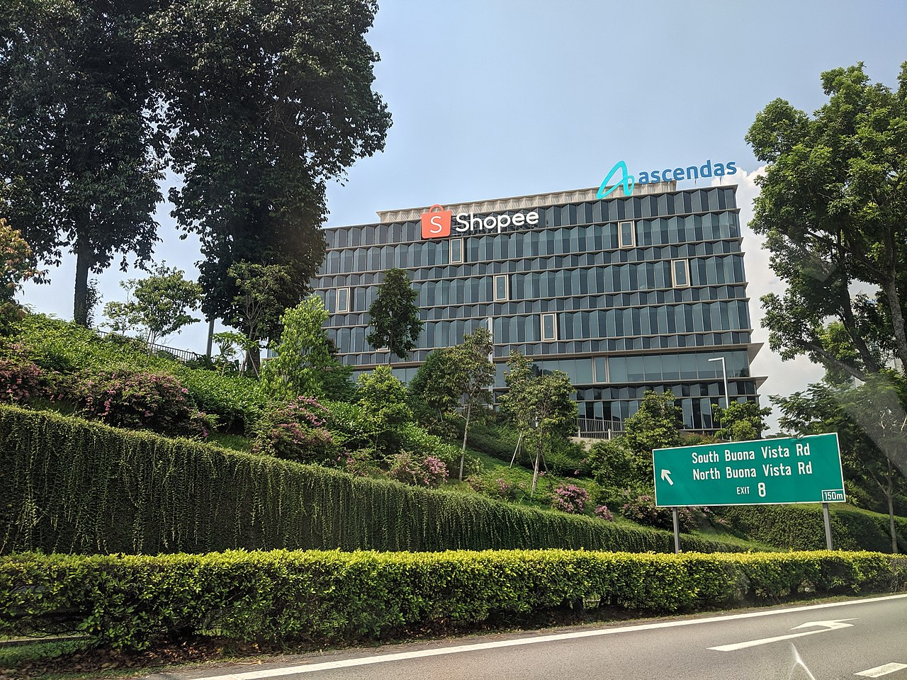

Shopee Pte Ltd is a Singaporean multinational technology company which focuses mainly on e-commerce. Headquartered under Sea Group (previously known as Garena),[3] Shopee was first launched in Singapore in 2015, and later expanded its reach to Malaysia, Thailand, Taiwan, Indonesia, Vietnam, the Philippines, Brazil, Mexico, Chile, and Colombia. It is also available in mainland China, Hong Kong, Japan, and South Korea as seller centres.[4][5][6][7] As of 2021, it currently serves consumers and sellers throughout Southeast and East Asia, as well as several countries in Latin America, who wish to purchase and sell their goods online.[8] Shopee was called one of the "5 disruptive ecommerce startups we saw in 2015" by Tech In Asia for its technical advancement and mass scale, thanks to the mobile and social elements integrated into the model.[9]